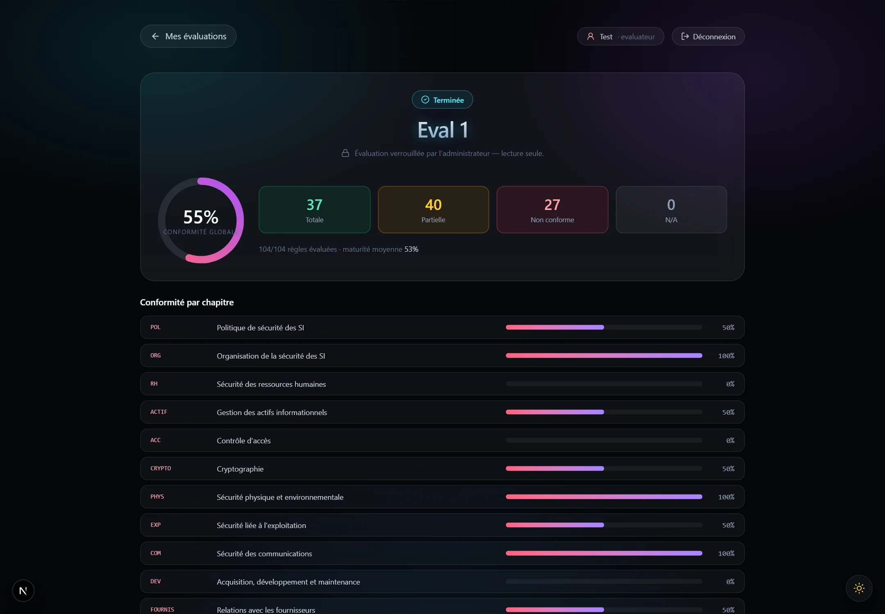

Complete reference model
14 chapters, 31 objectives, and 104 controls are held in a server-owned catalogue.
Royal Air Maroc / Security assurance / Solo project
A multi-user audit and self-assessment platform that converts Morocco's National Information Systems Security Directive into assignable work, measurable maturity, controlled evidence, and remediation priorities.

The National Information Systems Security Directive (DNSSI) is a substantial regulatory reference. A useful assessment tool had to do more than display questions. It needed to preserve the reference model, divide responsibility safely, track progress, calculate maturity consistently, and produce evidence that decision-makers could review.
The design therefore treated assessment as a lifecycle, not as a spreadsheet replacement.
I modeled the DNSSI reference data, designed the campaign and assignment workflows, implemented the frontend and API, established the authorization model, and documented the architecture and operational use.
14 chapters, 31 objectives, and 104 controls are held in a server-owned catalogue.
Draft, active, completed, and archived states keep review work explicit.
Assessors work only within chapters assigned to them.
Completed assessments can produce CSV, Excel, and PDF deliverables.
The platform separates administrator and assessor roles. Sessions are revocable and stored in HttpOnly cookies. State-changing requests use CSRF protection, passwords use bcrypt, and every read and write is authorized server-side.
Chapter-level isolation prevents assessors from viewing or changing work outside their assignment. Optimistic revisions and append-only audit events support accountability and reduce silent overwrites.
The result turns a regulatory reference into accountable ownership, measurable progress, chapter-level analysis, exportable evidence, and visible remediation priorities.
The project is private and was developed in an internship context. Source code and internal architecture materials are not published. The interface screenshot and this non-sensitive workflow summary show the product structure without exposing Royal Air Maroc information.